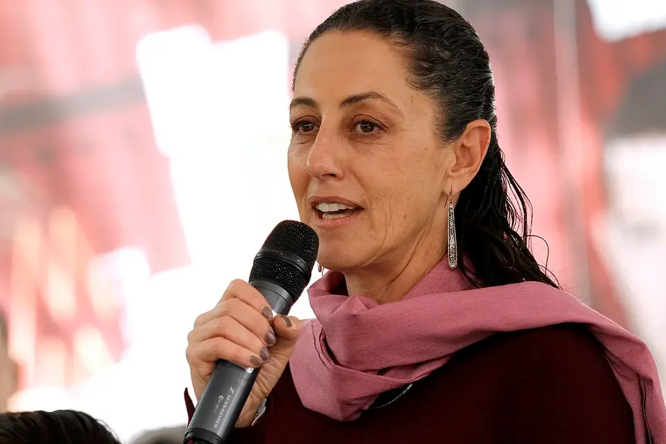
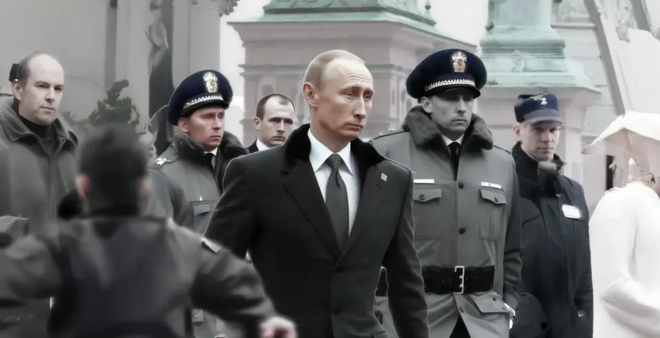
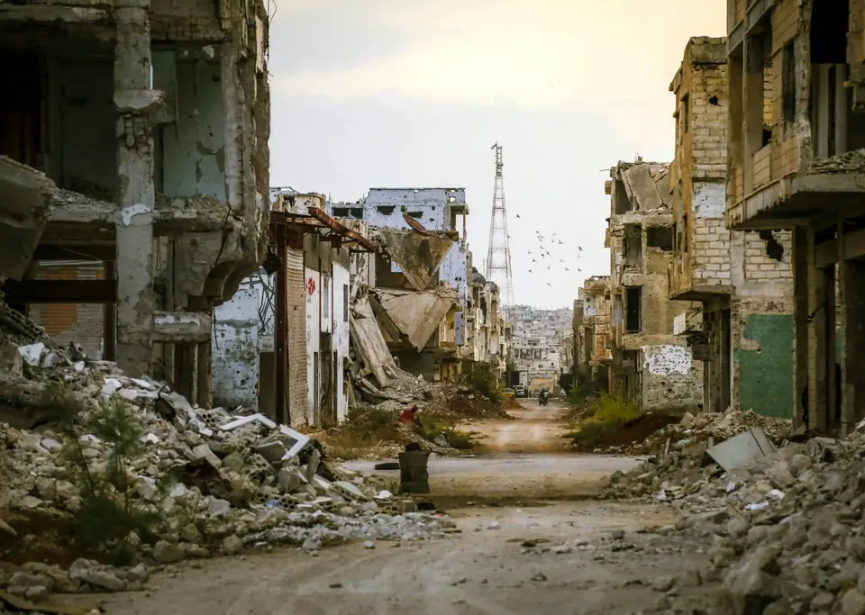
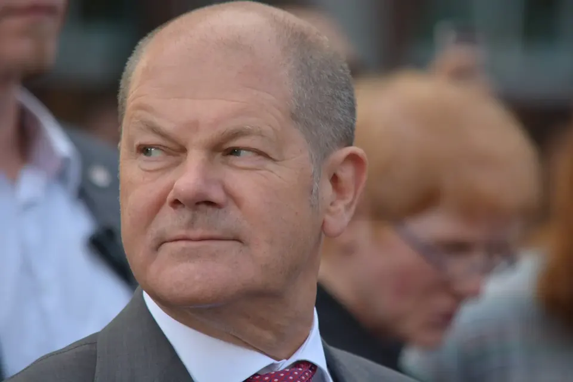

-
Venezuela, January 3, 2026: The Day the Dams Broke
On January 3, 2026, the United States launched a military operation in Venezuela and captured Nicolás Maduro — framed as a drug and security action, but in reality a regime change. This article dismantles the fentanyl narrative, exposes the oil and power interests behind the strike, examines cartel dynamics and the breach of international law, and explains why this precedent empowers China and Russia while leaving Europe dangerously exposed. A turning point for the global order — with consequences far beyond Caracas.
-
100 Years ago Erik Satie died – Silent Punk and Revolutionary of His Time
On July 1st, 2025, we mark the 100th anniversary of Erik Satie’s death – a true oddball genius whose sparse piano works and ironic notation still feel fresh today. This article dives into the life and legacy of a man who drank too much absinthe, collected umbrellas like trophies, and composed some of the most quietly revolutionary music of the 20th century. From his only great love to his surreal friendships with Cocteau and Picasso, this is a deep but entertaining journey into the world of a man who was punk long before punk existed.
-
The Digital Echo: How Algorithms Shape Our Opinions and Divide Society
Algorithms no longer just shape our feeds — they shape our perception, influence our opinions, and drive societal division. In a world of filter bubbles and echo chambers, we only see what we already believe. This digital echo amplifies extreme views and undermines democratic discourse. This article explores how platforms operate, the dangers of disinformation, and what steps we can take to actively counteract these effects.
-
From Cult to Commerce – How Action Sports Brands Lost Their Soul to Investors
The often painful history of action sports brands like Quiksilver & Billabong. Born from riders, they battle authenticity vs. commerce. See how investors reshaped the scene and new brands rise.
-

Claudia Sheinbaum: Mexico’s First Female President
Claudia Sheinbaum, Mexico’s first female president, brings a unique background as a physicist and environmental scientist to the nation’s highest office. Her political rise began alongside Andrés Manuel López Obrador and led her to become mayor of Mexico City. Sheinbaum focuses on social reforms, the fight against drug cartels, and pragmatic foreign policy. Despite strong popularity, she faces criticism over security challenges, human rights issues, and her close ties to López Obrador.
-
The USA – From an Industrial to a Service-Based Economy: Why New Jobs Are Missing
The U.S. lost millions of industrial jobs, but the growing service sector couldn’t replace them. Service jobs tend to be lower-paying, and many lost factory jobs were replaced by these lower-wage positions. Additionally, most new jobs are in low-skilled services, not high-skill jobs. The shareholder-focused capitalism of the 1980s led companies to offshore production and cut jobs to increase profits. Automation has also replaced many industrial jobs, and even if companies return to the U.S., they may not create many new jobs due to high-tech automation.
-
Donald Trump’s Current Trade Policy: A Plan Hidden in Chaos
Trump’s three-phase strategy aims to reshape the global economic order in favor of the U.S. Initially, tariffs are used as a negotiating tool, followed by reciprocal tariffs to create fairer trade. The long-term goal is a new currency agreement that strengthens the U.S. dollar while allowing for its devaluation. This strategy carries significant risks: if it fails, it could lead to global fragmentation and a diminished role for the U.S. on the world stage.
-
Russia’s Covert and Hybrid Warfare: The Gerasimov Doctrine in Action
Russia’s hybrid warfare, driven by the Gerasimov Doctrine, combines military and non-military means to destabilize its opponents. Through covert operations, cyberattacks, disinformation, and economic pressure, Russia seeks to undermine democracies and expand its influence. The GRU, especially its Unit 29155, plays a key role in sabotage, assassinations, and destabilization efforts worldwide. The West faces an undeclared war, and Russia’s aggressive tactics pose a severe threat to global security and democracy.
-
Donald Trump’s latest tariff move has sent financial markets into turmoil – and now raises serious questions about possible market manipulation and insider trading.
Donald Trump’s tariff policies in April 2025 caused a massive stock market crash, only for the tariffs to be suspended shortly afterward, leading to a sharp market rally. Critics claim that Trump may have manipulated the market for personal gain, with his company TMTG benefiting from a significant stock price surge. There are also concerns about potential insider trading, as Trump’s public post urging investors to “BUY” coincided with his tariff reversal. These events raise serious questions about conflicts of interest, market manipulation, and the abuse of political power for financial advantage.
-
In Your Own World: Perception and Reality
Perception and reality are often not the same – everyone lives in their own world, shaped by personal experiences, beliefs, and filter bubbles. People like Vladimir Putin, who only gather information from filtered sources, or conspiracy theorists, who turn their fears into supposed truths, show how distorted reality can be. A person’s sense of fashion can also differ greatly from how others perceive it. Ultimately, it’s about regularly questioning your own perception and approaching others with empathy, especially those who live in their own reality.
-
Twilight of Democracy: How Oligarchs Are Driving Capitalism into Fascism
Capitalism is at a crossroads. As oligarchs accumulate unprecedented wealth and power, inequality rises, threatening democratic values. History shows that economic instability often paves the way for fascism—is history repeating itself? This article explores how short-term profit motives, political manipulation, and the erosion of the middle class create a dangerous spiral. Where does this path lead? Can capitalism be reformed for fairness, or are we heading toward an authoritarian future?
-
Russian Propaganda and Its Narratives: An Analysis
Russian propaganda aims to sow doubt and discredit Western support for Ukraine. Common narratives claim that Ukraine is a dictatorship, the West orchestrated a coup in 2014, or that Russia is merely defending itself. These claims do not hold up to factual analysis. Ukraine remains a democracy, Russia is the aggressor, and Western sanctions are weakening Moscow’s economy in the long run. Critical source analysis is essential to expose disinformation.
-
Scandal in the Oval Office: Trump vs. Zelensky – Is Ukraine Aid Now at Risk?
The recent Oval Office clash raises doubts about continued Ukraine aid. With Trump back in power, Europe must ask: Can it sustain Kyiv without U.S. support? While nations like Germany, France, and Poland send billions in weapons, it’s unclear if that’s enough. Without Washington, ammunition shortages and political fractures loom. If Europe doesn’t step up fast, Russia could gain the upper hand—threatening Europe’s security architecture.
-

Putin’s Sinister Game: Destabilizing Europe Through Manipulation, Chaos, and Hybrid Warfare
Putin isn’t waging war with tanks but with disinformation, cyberattacks, and political manipulation. His goal: a weak, divided Europe that collapses from within. While the West hesitates, Putin exploits every vulnerability. If Europe doesn’t wake up soon, his vision of a powerless, chaotic EU may become reality.
-
On a Personal Note – Why I Write?
Why do I write? Because it’s about values, freedom, and exchanging thoughts. I share my experiences and political views not to show off, but to reflect on the world. My values have been shaped by history, travel, and personal experiences. Today, I see freedom and democracy under threat—not just in Russia, but also in the West. Many people are disillusioned, but the alternatives are often worse. I may leave Germany again, but until then, I write to spark discussions. If we don’t defend our values, we risk losing them.
-
Europe at a Crossroads: Challenges and Opportunities for a Stronger Future
Europe stands at a crossroads: geopolitical tensions, technological shifts, and economic competition threaten its position against powers like the US, China, and India. Internal divisions and bureaucratic inertia hinder necessary reforms. Yet, Europe has immense potential: investment in education, innovation, renewable energy, and social cohesion could strengthen its global standing. A new “innovation drive,” energy independence, and democratic modernization are crucial to safeguarding competitiveness. Without bold reforms, Europe risks falling behind and becoming dependent on other powers. Now is the time to act and build a forward-looking vision for the continent’s future.
-
Elon Musk and the Controversial Salute: Provocation, Influence, and Global Reactions
Elon Musk recently sparked global outrage by making a gesture during President Trump’s inauguration that resembled a Nazi salute. Whether intentional or impulsive, this act has drawn sharp criticism and raised questions about his motivations and accountability. While the gesture has been condemned by many, it has also been celebrated by extremist groups and could be exploited for propaganda in Russia. This incident highlights the profound influence of public figures and underscores the need for critical examination of their actions and their global impact.
-
Oligarchs and Their Growing Influence: A Risk to Democracy and Society?
Oligarchs shaping politics: From Trump to Musk, from Saudi Arabia to Qatar—wealthy individuals and lobby groups increasingly influence global legislation and political decisions. What was once done discreetly through lobbyists now happens openly, as billionaires enter politics themselves. This trend poses significant risks to democracy, the environment, and social equity, as personal interests often take precedence. The article explores global examples and examines the long-term consequences of economic power dominating political authority.
-
The Battle for Freedom: Redefining Liberalism in a Populist World
Freedom is under siege, twisted by populists and nationalists to stoke fear and division. Leaders like Trump, Orbán, and Meloni exploit legitimate concerns, turning them into weapons against inclusivity and progress. True liberalism champions not just individual freedoms but the shared humanity that binds us. The world doesn’t need more walls—it needs bridges built on understanding and unity. Let’s reclaim freedom as a beacon of inclusion and cooperation, not a battleground of exclusion. Together, we can redefine what it means to be truly free.
-
Saudi Arabia Awarded the 2034 FIFA World Cup: A Decision Under Global Scrutiny
Saudi Arabia’s selection to host the 2034 FIFA World Cup ignites fierce debate. While FIFA lauds the choice as a unifying move, concerns about human rights, Jamal Khashoggi’s murder, and systemic issues like women’s limited freedoms overshadow the decision. Critics argue the bid process lacked transparency, resembling past controversies such as Qatar 2022. FIFA’s credibility now hangs in the balance, as the tournament could symbolize progress or reinforce perceptions of ethical compromise in global sports.
-
Syria at a Crossroads: The Faces and Forces Shaping Its Uncertain Future
Syria stands at a critical juncture. With figures like Abu Mohammad al-Julani of Hayat Tahrir al-Sham (HTS) and interim president Mohammed al-Bashir at the forefront, the country’s future remains uncertain. Julani’s past as an al-Qaeda affiliate contrasts sharply with his current attempts to position HTS as a legitimate force, while Bashir’s rise as a compromise candidate raises questions about his ability to unite the nation. The parallels with Libya’s ongoing instability offer a sobering reminder of the dangers of fragmentation, as regional and global powers vie for influence. Can Syria overcome its divisions, or will it spiral further into chaos?
-

The Fall of the Assad Regime: What’s Next for Syria?
The fall of the Assad regime and the rise of the Hayat Tahrir al-Sham (HTS) militia mark a turning point in Syria’s history. But what does this mean for the country’s future? HTS, once aligned with Al-Qaeda, now claims to have adopted more moderate goals, though skepticism persists. The political and social challenges are immense: Kurdish territories, ethnic minorities, women’s rights, and the risk of renewed conflicts raise pressing questions. Will Syria become a new Afghanistan, a fragmented nation, or a unified, free country? Europe, Turkey, and the broader Middle East will be closely watching, as the repercussions could be profound.
-
Leaderless into Crisis: Who Will Govern Germany?
The chancellor candidates from the major parties inspire little hope for a brighter future. Scholz hesitates, Merz clings to the status quo, Habeck stumbles over his own missteps, and Lindner seems to be a roadblock. Meanwhile, outsiders like the AfD and BSW offer no solutions, only threats to democracy. So, what’s left? Once again, choosing the lesser evil – while time runs out and problems grow. An analysis of the candidates’ weaknesses and the pressing question: How do we escape this deadlock?
-
We may have missed the signs of the times?
For too long, Europe and Germany have relied on U.S. security guarantees, missing crucial developments along the way. With American troops withdrawing and geopolitical instability sparked by Russia, we face unprecedented challenges. But it’s not just our security—our economy also suffers from a lack of independence. Europe must come together, foster innovation, and become more self-reliant to thrive in a changing world. It’s time to recognize the signs of the times and make bold decisions—for a secure and prosperous future.
-
Unidentified Anomalous Phenomena: Unraveling the Mystery
UAPs – unidentified anomalous phenomena – raise more questions than they answer. Are they extraterrestrial visitors, time travelers, or something entirely different? As politicians and scientists seek answers, one thing is clear: we are at the beginning of a new understanding of ourselves and the universe. But are we ready to confront the unknown? This article explores recent developments, possible explanations, and what these phenomena might reveal about our own future.
-

So it has come to this.
In this article, the author criticizes the collapse of Germany’s traffic light coalition, attributing it to the uncompromising stance of FDP leader Christian Lindner. Chancellor Olaf Scholz is accused of failing as a leader and blaming others for the coalition’s failure. The author fears that political instability will lead to a surge in support for the right-wing AfD and the left-leaning BSW, while established parties lose ground. Emphasizing the need for strong leadership and clear strategies in the face of economic challenges, social inequality, and global tensions, the article discusses issues such as the role of the media, the importance of civil society, climate change, migration, and Germany’s international relations. The author calls for immediate new elections and sharply criticizes the current political leadership.
-
Fading Hope: A World Heading Toward Autocracy
In this blog post, the author expresses deep concern over the re-election of Donald Trump as U.S. President. He feels disillusioned and no longer understands the world, given that a politician who openly questions democratic values has been elected again. The author reflects on the global rise of autocrats, populists, and oligarchs who are plunging the world into uncertainty. He wonders why so many people are choosing such leaders and what effects this will have on countries like Europe, Ukraine, China, and the U.S. He is also worried about similar trends in Germany, where disillusioned citizens are turning to extreme parties like the AfD or the BSW. The text mirrors his fear for the future—both his own and his daughter’s—and calls for reflection on current political tendencies.
-
Violence in my daughters former “hot spot” elementary school in Laim / Munich
After moving from Russia to Munich, my daughter Charlotte faced the challenge of adapting to a new school. We were quickly confronted with the issues that can arise in a multicultural school environment. Violence among students and a lack of support from the school became part of our daily lives. In this article, I share our experiences and highlight the urgent need for effective prevention measures and greater involvement from all parties.
-
The Chancellor Question in the Union
In this blog article, the author critiques the ongoing debate about the chancellor candidacy within the Union. He argues that neither Markus Söder nor Friedrich Merz are suitable candidates and laments the absence of a charismatic, uncorrupt chancellor candidate. He views the chances of a Bavarian politician becoming chancellor with skepticism and expresses concerns about corruption and lack of likability among the current contenders. In conclusion, he wonders if he’ll have to choose the “lesser evil” once again.
-
Will the AfD now come to power?
In this article, the author expresses his concern about the current political and economic situation in Germany and Europe. He discusses the limitations of the existing system, the population’s fear of declining living standards, and the impact of increasing migration. The author warns about the rise of extremist parties like the AfD and possible foreign influences on German politics. He emphasizes the need for society to stand together to find common solutions instead of turning to radical fringe parties. In conclusion, he appeals for deep reflection on how to tackle these challenges collectively to avoid a resurgence of extremism.
-
A Look at My Daughter’s Elementary School and Beyond
“Building Bridges in the Classroom: Violence Prevention and the Invisible Scars of War” In my latest blog post, I delve into the issue of violence at my daughter’s elementary school. From the challenges in a school with a high migrant population to personal experiences with a traumatized war veteran – my post sheds light on the multifaceted causes of conflicts and their impact on the school environment. A critical examination of the school management’s solutions and my personal perspective as a parent.
-
Controversial Accusations Against Bavarian Minister Spark Debate Ahead of State Elections
Just weeks before the upcoming Bavarian state elections, allegations against Hubert Aiwanger, Bavaria’s Minister of Economic Affairs and leader of the Free Voters party, have stirred up a whirlwind of controversy. The accusations stem from his school days, where he allegedly authored an antisemitic flyer. The Süddeutsche Zeitung’s report on the matter has not only put Aiwanger under scrutiny but has also raised questions about the newspaper’s role in the unfolding drama.
No article matches.